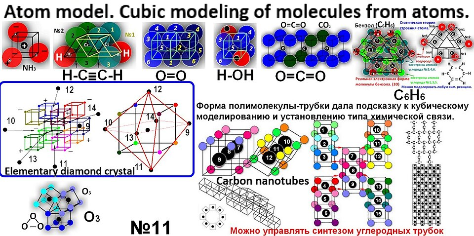

Módulo 00 — Introducción a React
"React is not a framework. It's a library." — Documentación oficial
React es la librería de UI más usada del planeta en 2026. Antes de escribir una línea de JSX, vale entender QUÉ resuelve, POR QUÉ existe, y CUÁNDO usarla vs sus alternativas.
0. La gran analogía

- Llega un pedido nuevo → buscás el plato en la pizarra → lo tachás → escribís el nuevo → repintás el cartel.
- Diez pedidos por minuto = imposible mantener consistencia.
- Eventualmente tachás de más, escribís donde no, alguien lee algo desactualizado.
- Vos describís cómo se ve el menú cuando hay N pedidos.
- React mira el estado, calcula qué cambió, y redibuja solo lo necesario.
- Vos nunca tocás el DOM directamente — solo describís el "qué", no el "cómo".
1. ¿Qué es React, exactamente?
- NO hace routing (necesitás React Router).
- NO hace data fetching (necesitás TanStack Query / fetch / SWR).
- NO hace estado global (necesitás Zustand / Context / Redux).
- NO hace styling (CSS, Tailwind, CSS-in-JS).
- NO hace build (Vite, Next.js, Webpack).
- Reconciliation: comparar el árbol de UI nuevo con el viejo y aplicar solo los cambios mínimos al DOM.
- Componentes reutilizables como funciones JavaScript.
- Composición declarativa con JSX.
- Hooks: API para estado, efectos, memo, contexto.
- Server Components y streaming (desde React 18).
2. ¿Por qué existe React? Historia rápida
$("#counter").text(n)). Funcionaba para sitios chicos. Para apps con miles de elementos = caos imposible de debuggear.useState, useEffect). Re-define el modelo mental.use(), Server Components, Server Actions, mejor TS, useFormStatus, useOptimistic, compilador (RC).3. El mental model: UI = f(state)
- Cuando el estado cambia → React vuelve a llamar a la función → obtiene nueva UI.
- React compara nueva UI con anterior (diff) → aplica solo los cambios reales al DOM.
- Vos no tocás el DOM nunca. Solo describís el estado.
function Contador({ valor }) {
return <h1>Llevamos {valor} clicks</h1>;
}
// Render con estado=0 → <h1>Llevamos 0 clicks</h1>
// Render con estado=3 → <h1>Llevamos 3 clicks</h1>
// React solo cambia el texto "0" → "3", no recrea el <h1>4. Anatomía de una app React moderna
| Capa | Quién | Qué hace |
|---|---|---|
| Build / dev server | Vite (o Next.js) | Compila JSX → JS, sirve con HMR |
| UI | React | Componentes, hooks, render |
| Routing | React Router 7 o Next.js App Router | Navegación entre páginas |
| Data fetching | TanStack Query 5 / SWR / fetch | Server state, cache, mutations |
| Client state global | Zustand / Context / RTK | Estado compartido entre componentes |
| Forms | React Hook Form / hook nativo | Validación, submit, errores |
| Styling | Tailwind / CSS Modules / Styled | Apariencia visual |
| Tests | Vitest + Testing Library | Unit + integration |
| Tipos | TypeScript | Catch bugs en compile-time |
5. ¿React vs sus alternativas?
| Librería | Filosofía | Cuándo elegirla |
|---|---|---|
| React | Funciones + hooks, ecosistema gigante | Default sensato 2026. Trabajos, comunidad, recursos. |
| Vue 3 | Templates HTML-like + Composition API | Equipos que vienen de Angular o que prefieren SFC. |
| Svelte 5 / SvelteKit | Compilador — no hay runtime de virtual DOM | Bundle ultra chico, sintaxis muy limpia. Apps medianas. |
| Solid | JSX + reactividad fine-grained | Performance extrema, devs que vienen de React y quieren más velocidad. |
| Qwik | Resumability (vs hidration) | Sitios con foco extremo en time-to-interactive. |
| HTMX | HTML moderno + atributos, sin JS | Sitios que solo necesitan interactividad simple. |
| Vanilla JS | Sin librería | Sitios estáticos, landing pages, web components puros. |
6. Cuándo (NO) usar React
- La UI tiene estado complejo que cambia mucho (dashboards, editores, chats).
- Hay muchas interacciones (clicks, drag, real-time).
- Necesitás reutilizar componentes en múltiples páginas.
- El equipo ya sabe React (o querés aprovechar el ecosistema y oferta laboral).
- Vas a hacer móvil también (React Native comparte el modelo).
- Es una landing page con 3 secciones estáticas.
- Es un blog que casi no muta nada (Astro/Hugo/Eleventy ganan).
- El sitio debe correr sin JavaScript (accesibilidad extrema, SEO duro).
- El bundle size es crítico (~5-10 KB max — Svelte gana).
7. Cómo se ve React en 2026 (preview)
// Componente moderno con hooks
import { useState } from 'react';
function Contador() {
const [n, setN] = useState(0);
return (
<div>
<p>Clicks: {n}</p>
<button onClick={() => setN(n + 1)}>+1</button>
<button onClick={() => setN(0)}>Reset</button>
</div>
);
}
// Uso desde una app:
function App() {
return (
<main>
<h1>Mi primera app</h1>
<Contador />
</main>
);
}
8. La curva de aprendizaje real
| Tiempo | Qué deberías estar dominando |
|---|---|
| Primera semana | Componentes, JSX, props, useState, renderizar listas. |
| Primer mes | useEffect, forms, fetch básico, React Router, custom hooks. |
| 3 meses | TanStack Query, Zustand, performance básica, tests, TypeScript. |
| 6 meses | Next.js, Server Components, patrones avanzados, arquitectura. |
| 1 año | Mid-level: podés liderar una feature de extremo a extremo. |
| 2-3 años | Senior: arquitectura, mentoring, decisiones técnicas con trade-offs. |
9. Errores comunes al empezar
useMemo, useCallback y React.memo tienen costo. Sin medir, agregás complejidad sin beneficio. Optimizá cuando tengas problema medido.10. Recursos canónicos
- react.dev — docs oficiales, la mejor docs de tecnología del 2024+
- react.dev/learn — tutorial oficial, hacé los primeros 5 capítulos
- Josh Comeau — explica hooks con animaciones interactivas
- Overreacted (Dan Abramov) — pensamiento profundo sobre React
- Kent C. Dodds Blog — patrones, testing
- patterns.dev — patrones de UI modernos
- Libro: "The Road to React" (Robin Wieruch) — buena intro paga
- YouTube: Theo (t3.gg), Web Dev Simplified, Fireship
✅ Checkpoint
1. ¿Qué tipo de cosa es React, y qué NO es?
React es una librería (no un framework) para construir UI con componentes. NO incluye routing, fetching, estado global ni build. Es solo la capa de view. Necesitás un ecosistema de librerías complementarias.
2. ¿Qué significa "UI = f(state)"?
Tu UI es una función pura del estado: dado un estado, hay un único output de UI. Cuando cambia el estado, React vuelve a llamar tus componentes, compara el output con el anterior, y aplica solo los cambios mínimos al DOM. Vos describís el "qué", no el "cómo".
3. ¿Qué es el Virtual DOM y por qué importa?
Una representación en JavaScript del árbol DOM. React mantiene 2 copias (la actual y la nueva tras un re-render), las compara (diffing), y aplica solo los cambios mínimos al DOM real. Es mucho más rápido que recrear nodos del DOM real para cada cambio.
4. ¿Cuándo NO conviene usar React?
En sitios estáticos (blog, landing) donde Astro/Hugo ganan en performance y simplicidad. En apps que deben funcionar sin JS. Cuando el bundle size es crítico (Svelte tiene ventaja). React brilla en apps interactivas con mucho estado cambiante.
5. ¿Qué stack moderno se recomienda para empezar en 2026?
Para una SPA: Vite + React 19 + TypeScript + Tailwind + TanStack Query + Zustand + React Router 7. Para fullstack con SSR: Next.js 15 con App Router + Server Components.
6. ¿Cuál es el cambio principal entre clases y hooks?
Antes los componentes eran clases con métodos de ciclo de vida (componentDidMount, componentDidUpdate). Desde React 16.8 (2018), se usan funciones + hooks (useState, useEffect). Ventajas: menos código, lógica reutilizable como custom hooks, sin this, mejor TypeScript.